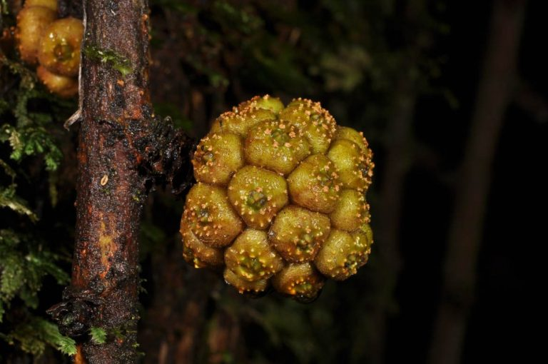

Longusei adalah stanaman identitas Indonesia, khususnya Sulawesi Utara. Tanama ini termasuk jenis pohon. Tumbuhan ini masi satu berkerabat dengan dengan beringin atau Ficus benjamina.
Tinggi pohon ini ini mencapai kurang lebih 15 meter. Bagian batang terdiri dari kulit, berkas pembuluh dan empulur. Kulit batang longusei mudah mengelupas dalam kondisi masih kering
Longusei memiliki beberapa manfaat untuk manusia. Kulit batang longusei dapat digunakan untuk membuat tali sedangkan daunnya dapat digunakan sebagai obat. Buah dari tumbuhan ini biasa digunakan sebagai campuran dalam minuman tradisional.